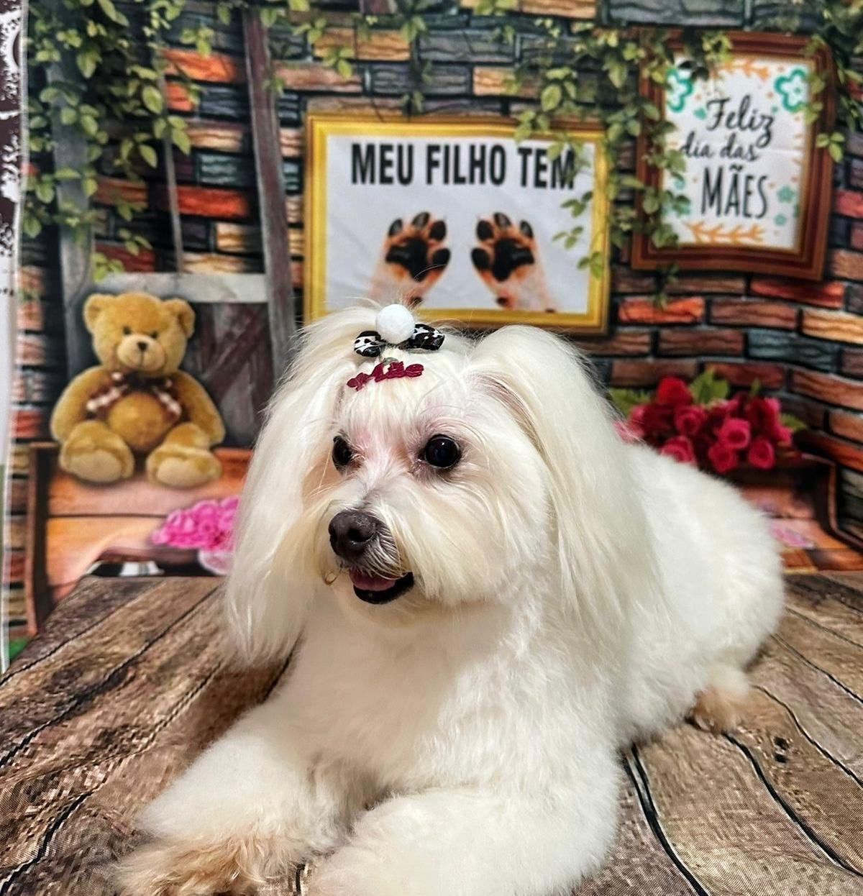
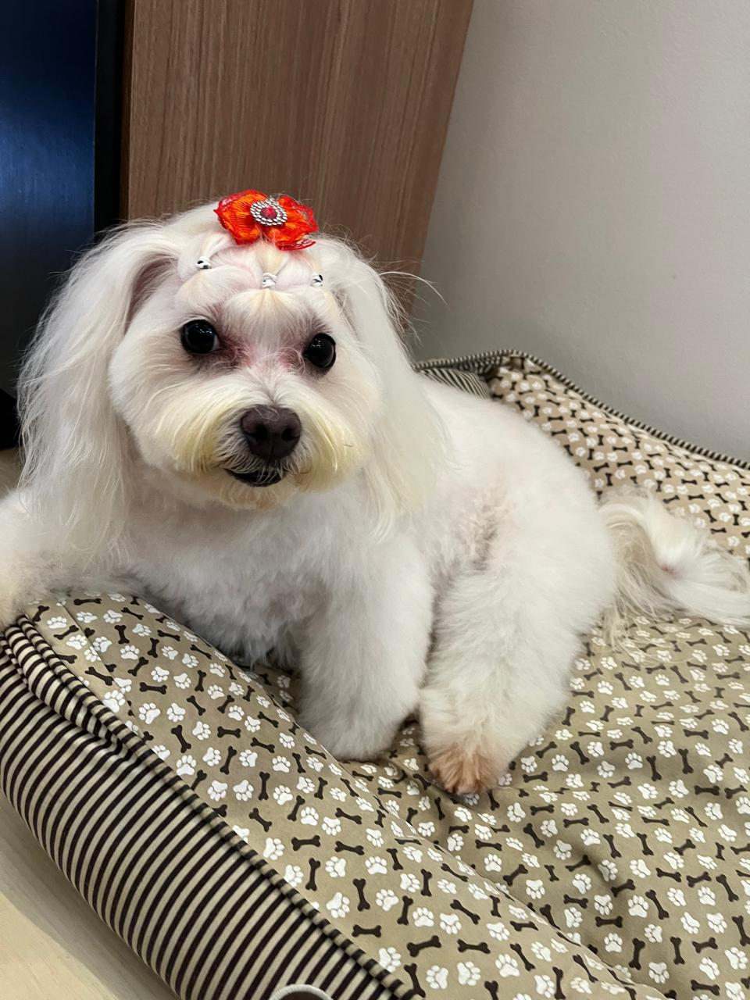

Sobre a Raça
O Maltês é um cachorro pequeno, famoso por sua pelagem branca e macia, além de ser extremamente carinhoso e fiel.
Características
- üêæ Porte pequeno
- üêæ Pelagem longa e branca
- üêæ Temperamento d√≥cil e brincalhona
- üêæ √ìtima companhia
- üêæ Nascimento: 16 de junho de 2015 (Veja Atibaia no mapa)
Galeria de Fotos
 